Магия земли - один из четырёх видов магии стихий в мире Аватара. С помощью неё можно управлять землёй и камнями в их различных формах. Маги земли рождаются у жителей царства Земли и их потомков в других частях света. Согласно Айро, земля - это элемент силы и стойкости. Маги земли предпочитают защищаться от атак противника, выжидая момент для нанесения контратаки или решающего удара.
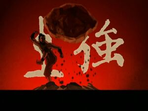Земля
Основы магии земли
| Левитация 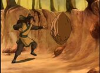 | Применяется в большинстве техник. Маг земли перемещает естественные валуны или создаёт их сам. Размер перемещаемых камней, скорость и дальность левитации зависит от мастерства мага. |
|---|---|
| Разрушение 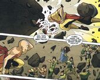 | Маг земли способен раскалывать, дробить, истирать камни и скалы, а также раздвигать землю, чтобы создать тоннель для себя или наоборот чтобы затянуть туда противника. |
| Сжатие 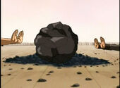 | В противоположность разрушению, маг земли может сжимать землю до получения более твёрдой и компактной формы, которой будет более выгодно нанести удар. Хару и его отец, Тайро, использовали эту технику, сжатие несколько небольших кусков угля в один большой валун угля. Учитывая тот факт, что двое магов земли были необходимы для выполнения этого приёма, можно предположить, что эта техника достаточно сложна, возможно, что одному магу земли гораздо труднее даётся этот приём. |
| Манипуляция формами земли 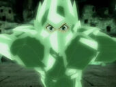 | Опытные маги земли могут манипулировать не только землёй, но и всем, что в большей или меньшей степени содержит землю. Например, песком, углём, кристаллами, пылью и другими неземными материалами, такие как метеориты и дженномит. |
Простые приёмы и техники
| «Сдвинь камень» 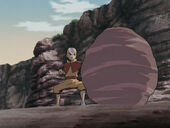 | Приём, позволяющий ощутить землю. Он лежит в основе многих техник. Суть приёма состоит в том, чтобы сдвинуть камень, находящийся в непосредственной близости от мага. |
|---|---|
| Земляной/каменный щит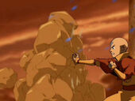 | Оборонительная техника, с помощью которой маг поднимает перед собой толщу земли и камней. Однако она может использоваться и в атаке, если поднимать землю под противником. Также можно после постановки щита расходовать его, запуская камни в соперника. |
| Каменные колонны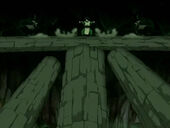 | Маг земли с высокой скоростью поднимает из земли каменные колонны. Этим приёмом можно отбросить противника или высоко подпрыгнуть самому. Колонны можно поднимать не только вертикально, но и под углом к поверхности земли. |
| Стены/плиты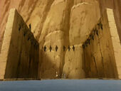 | Маг земли может создать каменную стену/плиту разной толщины и использовать её в бою или для строительства. Тоф несколько раз демонстрировала этот приём, создавая каменную палатку. Интересным вариантом этого приёма является создание стен с острым треугольным краем, чтобы обездвижить противника, не являющегося магом земли. |
| Каменные кандалы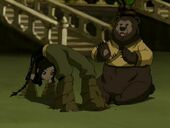 | Чтобы сковать противника - не мага земли, можно связать его руки и/или ноги с землёй. |
| Землетрясения/трещины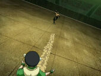 | Маг земли может сотрясать землю и каменные предметы, а также создавать трещины в земле. |